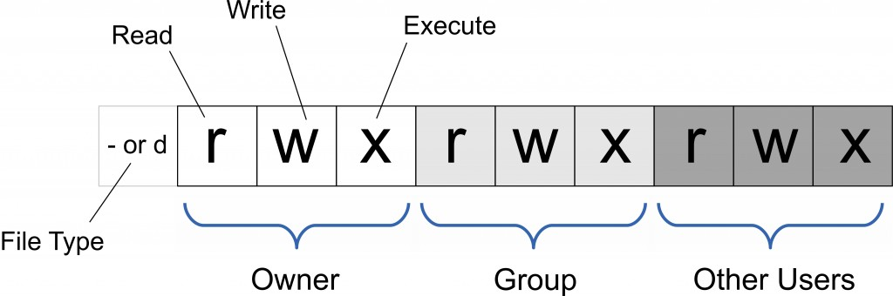
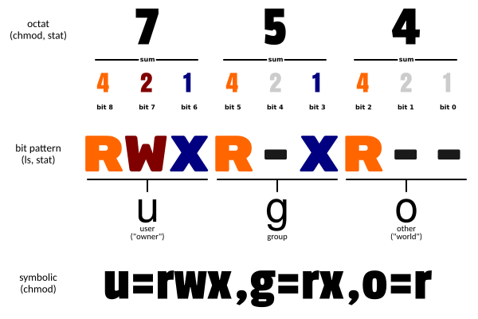

Linux chmod コマンド
Linux chmod（英語の正式名称: change mode）コマンドは、ユーザーのファイルに対する権限を制御するコマンドです。
chmod (change mode) は、Linux システムでファイルまたはディレクトリの権限を変更するためのコマンドで、ファイル所有者、所有グループ、その他のユーザーのファイルへのアクセス権限を制御します。
ファイル所有者とスーパーユーザーのみがファイルまたはディレクトリの権限を変更できます。
Linux/Unix のファイルアクセス権限は3段階に分けられます: ファイル所有者（Owner）、ユーザーグループ（Group）、その他のユーザー（Other Users）。

絶対モード（8進数モード）または記号モードでファイルの権限を指定できます。

使用対象: すべてのユーザー
構文
chmod [选项] 权限模式 文件... chmod [选项] --reference=参考文件 文件...
主なオプション
- -c : ファイルの権限が実際に変更された場合のみ、その変更内容を表示します
- -f : ファイルの権限を変更できない場合でもエラーメッセージを表示しません
- -v : 権限変更の詳細情報を表示します
- -R : 現在のディレクトリ内のすべてのファイルとサブディレクトリに対して同じ権限変更を行います（つまり、再帰的に1つずつ変更します）
- --help : ヘルプを表示します
- --version : バージョンを表示します
mode : 権限設定文字列。形式は次のとおりです:
権限モード
1、記号モード（ugoa+/-権限）
[ugoa...][[+-=][rwxX]...][,...]
ここで:
- u はファイルの所有者、g はファイルの所有者と同じグループ（group）に属するユーザー、o はその他のユーザー、a はこの3つすべてを表します。
- + は権限の追加、- は権限の削除、= は権限を一意に設定することを表します。
- r は読み取り可能、w は書き込み可能、x は実行可能を表します。X は、そのファイルがサブディレクトリであるか、そのファイルがすでに実行可能として設定されている場合にのみ実行可能を表します。
記号モードでは複数の項目を設定できます：who（ユーザータイプ）、operator（演算子）、permission（権限）。各項目の設定はカンマで区切ることができます。
chmod コマンドは、who で指定されたユーザータイプのファイルへのアクセス権限を変更します。ユーザータイプは、who の位置に1つ以上の文字で指定します。who の記号モード表を参照してください:
| who | ユーザータイプ | 説明 |
|---|---|---|
| u | user | ファイル所有者 |
| g | group | ファイル所有者が属するグループ |
| o | others | その他すべてのユーザー |
| a | all | すべてのユーザー、ugo に相当ugo |
operator の記号モード表:
| Operator | 説明 |
|---|---|
| + | 指定したユーザータイプに権限を追加します |
| - | 指定したユーザータイプの権限を削除します |
| = | 指定したユーザータイプの権限を設定します。つまり、ユーザータイプのすべての権限を再設定します。 |
権限タイプ:
| モード | 名前 | 説明 |
|---|---|---|
| r | 读 | 読み取り権限に設定 |
| w | 写 | 書き込み権限に設定 |
| x | 実行権限 | 実行可能権限に設定 |
| X | 特別な実行権限 | ファイルがディレクトリファイルである場合、または他のタイプのユーザーに実行権限がある場合にのみ、ファイル権限を実行可能に設定します。 |
| s | setuid/gid | ファイルが実行されると、who パラメータで指定されたユーザータイプに応じて、ファイルの setuid または setgid 権限を設定します。 |
| t | スティッキービット | スティッキービットを設定します。このビットを設定できるのはスーパーユーザーのみ、使用できるのはファイル所有者 u のみです。 |
2、8進数構文
chmod コマンドは8進数で権限を指定できます。
| 数字 | 権限 |
|---|---|
| 4 | 読み取り(r) |
| 2 | 書き込み(w) |
| 1 | 実行(x) |
組み合わせ:
- 所有者の権限（第1桁）
- グループの権限（第2桁）
- その他のユーザーの権限（第3桁）
一般的な組み合わせ:
- 755:
rwxr-xr-x - 644:
rw-r--r-- - 700:
rwx------
ファイルまたはディレクトリの権限ビットは9つの権限ビットで制御され、3ビットごとに1つのグループになります。それぞれ、ファイル所有者（User）の読み取り・書き込み・実行、ユーザーグループ（Group）の読み取り・書き込み・実行、その他のユーザー（Other）の読み取り・書き込み・実行です。
| # | 権限 | rwx | バイナリ |
|---|---|---|---|
| 7 | 読み取り + 書き込み + 実行 | rwx | 111 |
| 6 | 読み取り + 書き込み | rw- | 110 |
| 5 | 読み取り + 実行 | r-x | 101 |
| 4 | 読み取りのみ | r-- | 100 |
| 3 | 書き込み + 実行 | -wx | 011 |
| 2 | 書き込みのみ | -w- | 010 |
| 1 | 実行のみ | --x | 001 |
| 0 | 无 | --- | 000 |
たとえば、765 は次のように解釈されます:
- 所有者の権限を数字で表すと、所有者の3つの権限ビットの数字の合計になります。たとえば rwx の場合、4+2+1 で 7 になります。
- グループの権限を数字で表すと、グループの権限ビットの数字の合計になります。たとえば rw- の場合、4+2+0 で 6 になります。
- その他のユーザーの権限を数字で表すと、その他のユーザーの権限ビットの数字の合計になります。たとえば r-x の場合、4+0+1 で 5 になります。
例
ファイル file1.txt を全員が読み取り可能に設定します:
chmod ugo+r file1.txt
ファイル file1.txt を全員が読み取り可能に設定します:
chmod a+r file1.txt
ファイル file1.txt と file2.txt を、ファイル所有者とその属するグループのメンバーは書き込み可能、それ以外のユーザーは書き込み不可に設定します:
chmod ug+w,o-w file1.txt file2.txt
ex1.py ファイルの所有者に実行権限を追加:
chmod u+x ex1.py
現在のディレクトリ内のすべてのファイルとサブディレクトリを、誰でも読み取り可能に設定します:
chmod -R a+r *
さらに、chmod では数字を使って権限を表すこともできます。例:
chmod 777 file
構文は次のとおりです:
chmod abc file
ここで a、b、c はそれぞれ1つの数字で、User、Group、Other の権限を表します。
r=4，w=2，x=1
- rwx 属性にする場合は 4+2+1=7;
- rw- 属性にする場合は 4+2=6;
- r-x 属性にする場合は 4+1=5。
chmod a=rwx file
和
chmod 777 file
同じ効果
chmod ug=rwx,o=x file
和
chmod 771 file
同じ効果
もし次を使用するとchmod 4755 filenameこのプログラムに root 権限を持たせることができます。
詳細説明
| コマンド | 説明 |
|---|---|
| chmod a+r file | file のすべてのユーザーに読み取り権限を追加します |
| chmod a-x file | file のすべてのユーザーの実行権限を削除します |
| chmod a+rw file | file のすべてのユーザーに読み取り・書き込み権限を追加します |
| chmod +rwx file | file のすべてのユーザーに読み取り・書き込み・実行権限を追加します |
| chmod u=rw,go= file | file の所有者に読み取り・書き込み権限を設定し、そのグループとその他のユーザーの file に対するすべての権限をクリアします（スペースは権限なしを表します） |
| chmod -R u+r,go-r docs | ディレクトリ docs とそのサブディレクトリ階層内のすべてのファイルに対して、ユーザーには読み取り権限を追加し、グループとその他のユーザーからは読み取り権限を削除します |
| chmod 664 file | file の所有者とグループに読み取り・書き込み権限を設定し、その他のユーザーには読み取り権限を設定します |
| chmod 0755 file | に相当u=rwx (4+2+1),go=rx (4+1 & 4+1)。0特殊モードはありません。 |
| chmod 4755 file | 4setuid ビットを設定します。残りは u=rwx (4+2+1)、go=rx (4+1 & 4+1) に相当します。 |
| find path/ -type d -exec chmod a-x {} \; | path/ とそのすべてのディレクトリ（ファイルは含まない）のすべてのユーザーから実行権限を削除します。'-type f' を使用してファイルをマッチングします。 |
| find path/ -type d -exec chmod a+x {} \; | すべてのユーザーがディレクトリ path/ を参照または通過できるようにします |
クリックしてノートを共有
ノートは本記事の内容の拡張である必要があります！
記事の投稿は、こちらをクリックしてください
登録招待コードの取得方法
ノートを共有する前にログインが必要です！
登録招待コードの取得方法